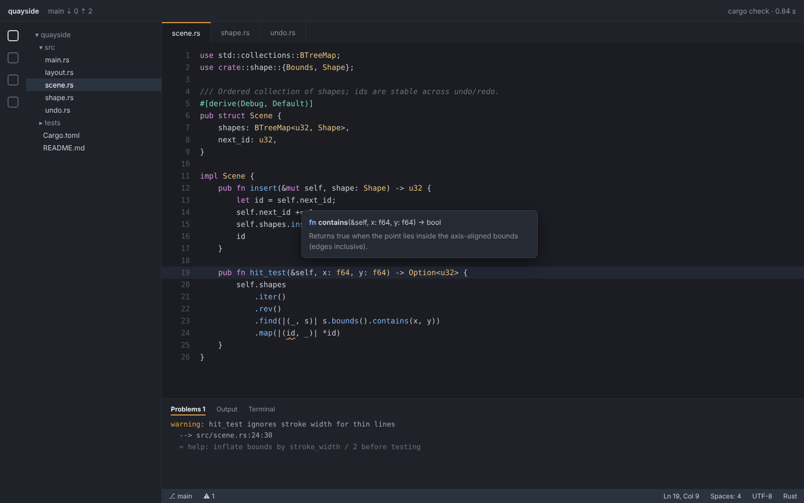

Waiting for a screen…
Cancel
Esc Cancel
Desktop screen chooser(GNOME, not drawn by Annota)

Waiting OSD — same component as "Waiting for a window…"fix-window-capture-screencast 02, with icon
capture-screen and label "Waiting for a screen…". Shown after Start Recording for Region and Screen (both request a monitor source) and for annota --record screen. The region overlay is already closed; the selection is kept. Window recordings show "Waiting for a window…" unchanged.EndsScreen granted → OSD goes → countdown (04), or recording at once with 0 s. Region whose selection is not inside the granted monitor → session closed, toast (13). Cancel, Esc or chooser closed → session closed, nothing written, no message. Where GNOME puts its chooser is GNOME's choice; it may cover the OSD.